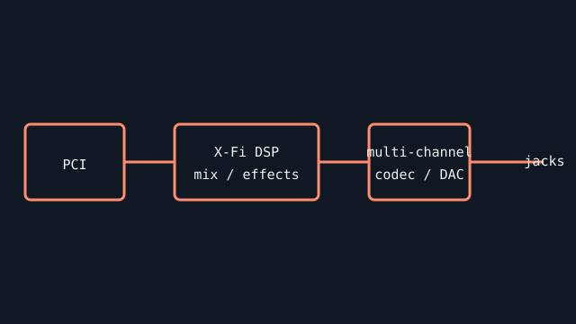

[ INDIVIDUAL COMPONENT // SOUND HARDWARE ]
Creative Sound Blaster X‑Fi XtremeGamer (SB0730)
This entry identifies the conventional PCI XtremeGamer card by its SB0730 family board marking; it is not an X-Fi Xtreme Audio or PCIe X-Fi variant.

Specifications
| Product ID | Creative Sound Blaster X-Fi XtremeGamer, SB0730 family; confirm complete SKU and silkscreen revision. |
|---|---|
| Bus | Conventional 32-bit PCI; no PCIe compatibility by slot adapter alone. |
| Connectors / I/O | Rear analog speaker/headphone, line-in/microphone, and digital I/O functions; exact jack assignment and optical module support depend on board bundle/revision. |
| Processing / conversion | Creative X-Fi audio processor and multi-channel analog conversion; advertised surround and sample-rate modes depend on driver mode and output path. Confirm converter markings from the actual board before attributing a DAC model. |
| Drivers / OS | Creative supplied Windows XP/Vista/7-era X-Fi drivers and applications; later OS support depends on Creative package and edition. There is no claim of official current Windows support for this PCI SKU. |
| Variant compatibility | SB0730 is distinct from SB0460 Elite Pro and similarly named PCIe cards. Control-panel features, front-panel header, bundled remote, and digital breakout are SKU-dependent. |
Service & preservation
Record the silkscreen and device ID; save the correct Creative driver and control-panel versions with the card. Inspect the gold edge contacts, rear jacks, and front-panel header for mechanical damage. Photograph any included bracket/remote before cataloging accessories as part of the SKU.
Primary sources
- Creative — official product support and legacy downloadsManufacturer repository; search by X-Fi XtremeGamer/SB0730 and verify the exact regional SKU.
- PCI-SIG — PCI specificationsBus standards source; card fit and host electrical compatibility remain specific to the motherboard.